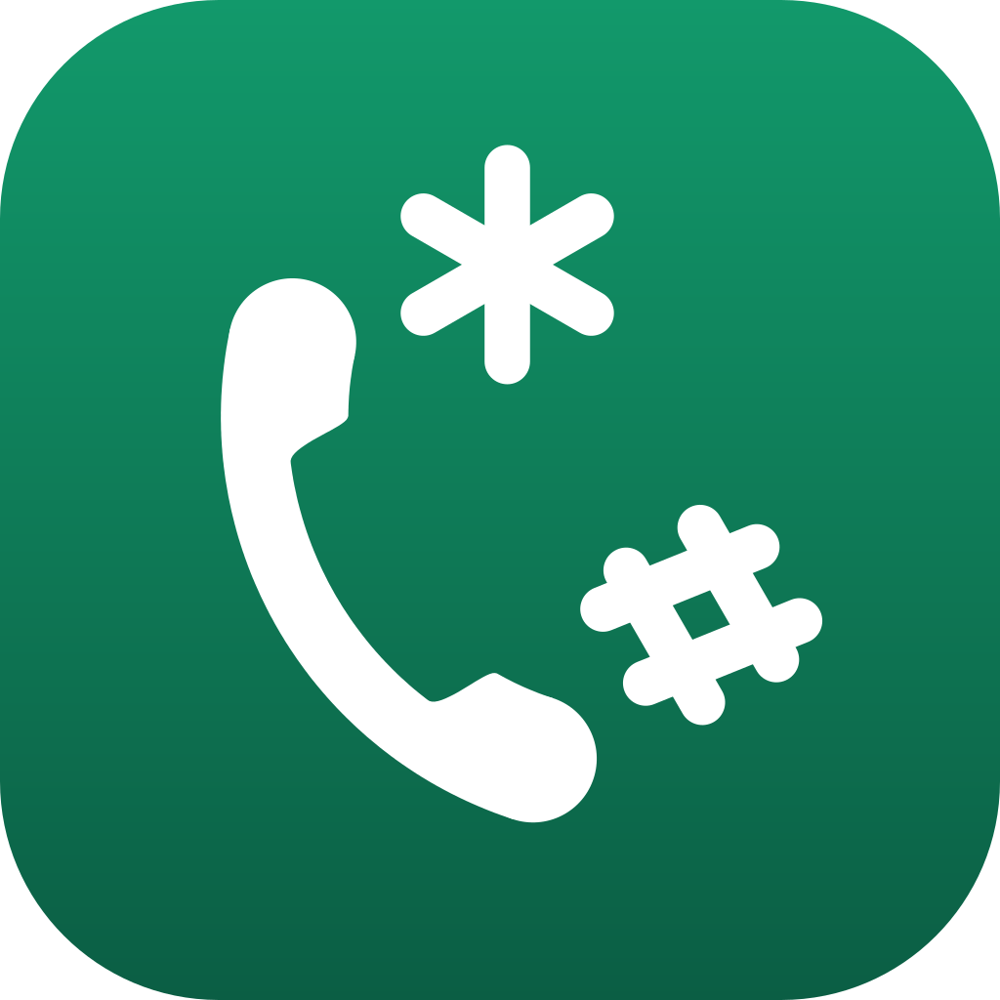

Privacy policy — All USSD
FrançaisLast updated: 22 August 2026
All USSD is a mobile application that gathers USSD/MMI codes and carrier codes country by country, and dials them in one tap. This page describes how your data is handled.
What the app does not do
- No user account, no sign-up
- No internet connection needed to work
- No access to your contacts, your location, or any other personal data
- The app never asks you for a permission, and holds none: dialling a code opens your phone's own Phone app with the number filled in, and you press Call yourself
Data stored on your device
Your settings and your choices in the app (favourites, preferences, codes you add yourself) stay on your phone.
Reporting a code, at your initiative
If you use the "Report this code" or "Suggest a new code" button, you choose yourself how to send it: by e-mail, or by opening a form on GitHub. Only what is shown on screen is sent: the country, carrier, name and code concerned, and whatever you describe of the problem. Sending is voluntary and triggered by you every single time; the app never transmits anything on its own.
A report opened on GitHub is public and stays public. The other two choices are not.
Sharing with third parties
We share no data with third parties, since we collect none.
Your rights
All of the app's data lives on your device: you can see it in the app itself and delete it from the app's settings.
Changes to this policy
This policy changes along with the app. The date at the top of the page tells you which version is in force.
Contact
For any question about this policy: levraidev@gmail.com